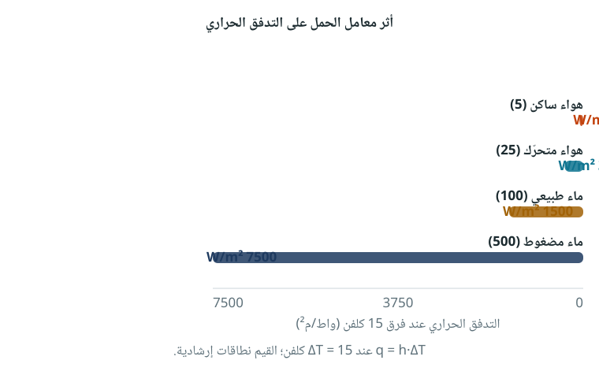

معامل الحمل القسري: كم يسرق الماء الحرارة من الجدار؟
غيّر التصريف والقطر وتابع السرعة ورينولدز ومعامل الحمل على المقياس.
المقياس يبدأ عند 6 لتر/ث و32 مم.
افتراضات النموذج والمصدر
Nu = 0.023 · Re^0.8 · Pr^0.4 ثم h = Nu·k/D
ماء عند 40 °م: كثافة 992 ولزوجة 0.000653 وبوصل 0.631 وبراندتل 4.32
أنبوب أملس مستقيم بجريان مضطرب تام
خصائص ثابتة لا تتغيّر بطول الأنبوب
لا تبخّر ولا تسخين كافٍ لتغيّر اللزوجة
Dittus–Boelter equation for turbulent flow in tubes — The Engineering ToolBox
Water — thermal properties at 40 °C — The Engineering ToolBox
معامل الحمل الحراري h هو ما يحوّل فرق حرارة إلى فيض حراري. في الجريان القسري داخل أنبوب، يحدّده رقم رينولدز (قوّة القصور مقابل اللزوجة) ورقم براندتل (سماكة الطبقة الحرارية). علاقة ديتس–بولتر تجمعها في رقم نسلت، ومنه يُستخرج h.
في الحالة الافتراضية (6 لتر/ث في أنبوب 32 مم) تكون السرعة 7.46 م/ث ورقم رينولدز 362,669 — مضطرب تام بكثير من الحدّ. ينتج رقم نسلت 1,158 ومعامل حمل 22,825 واط/م²·ك، أي أن فرق كلفن واحد ينقل 22.8 كيلوواط من كل متر مربع.
الطريق العملي لرفع المعامل ليس الصبر على الجريان بل تقليل القطر: عند التصريف نفسه، تنصيف القطر يضاعف السرعة أربع مرات (المساحة تتبع مربع القطر) فيقفز h بنحو 3.5 أضعاف، وترتفع معه قدرة المضخة بحدة.
كيف تعمل الظاهرة؟
الجريان السريع يرقّق الطبقة الحدّية اللاصقة عند الجدار، فتقلّ مقاومة التوصيل عبرها ويرتفع المعامل. تقليل القطر يزيد السرعة عند التصريف نفسه، فالمكسب مزدوج: سرعة أعلى ومسار حراري أقصر. وكل زيادة في اللزوجة تُثخّن الطبقة فتهبط h، ولهذا يهبط المعامل في الماء البارد أشدّ مما يوحي رقم نسلت وحده.
العلاقة بالأرقام
المعادلة: Nu = 0.023 · Re^0.8 · Pr^0.4 ثم h = Nu·k/D. عند التصريف 6.00 لتر/ث، القطر الداخلي 32.00 مم، يعطي الحساب: السرعة = 7.46 م/ث؛ رقم رينولدز = 362,669 ؛ رقم نسلت = 1,157.5 ؛ معامل الحمل h = 22,825 واط/م²·ك؛ الفيض عند فرق كلفن واحد = 22,825 واط/م². حالة «تدفق أقل» (التصريف 2.00 لتر/ث، القطر الداخلي 32.00 مم): السرعة = 2.49 م/ث؛ رقم رينولدز = 120,890 ؛ رقم نسلت = 480.7 ؛ معامل الحمل h = 9,478 واط/م²·ك؛ الفيض عند فرق كلفن واحد = 9,478 واط/م². حالة «تدفق أعلى» (التصريف 12.00 لتر/ث، القطر الداخلي 32.00 مم): السرعة = 14.92 م/ث؛ رقم رينولدز = 725,337 ؛ رقم نسلت = 2,015.4 ؛ معامل الحمل h = 39,740 واط/م²·ك؛ الفيض عند فرق كلفن واحد = 39,740 واط/م². هذه أمثلة مولدة من دالة الحساب نفسها؛ وليست قياسات فعلية أو مواصفات لجهاز تجاري.
مفاهيم متقاربة
يُخلط بين رقم نسلت ومعامل الحمل: الأول عدد بلا وحدة يصف شكل الجريان، والثاني واط/م²·ك وهو ما يدخل في Q=h·A·ΔT. ويُخلط بين h المحلي والمتوسط على طول الأنبوب: قيم ديتس–بولتر متوسطات طولية تصلح لأنبوب طويل لا لمقطع عند المدخل حيث الطبقة رقيقة.
حدود التطبيق
العلاقة للجريان المضطرب التام (Re أكبر من 10,000) في أنبوب أملس مستقيم ومائع بلا تغيّر طوري و0.6 أصغر من Pr أصغر من 160. لا تصلح للجريان الصفحي ولا للمقاطع غير الدائرية بلا قطر مكافئ ولا للماء القريب من الغليان حيث تتغيّر الخصائص وتبدأ فقاعات.

| الكمية | القيمة | المصدر |
|---|---|---|
| السرعة — الحالة الافتراضية | 7.46 م/ث | [1] |
| رقم رينولدز — الحالة الافتراضية | 362,669 بلا وحدة | [1] |
| رقم نسلت — الحالة الافتراضية | 1,157.5 بلا وحدة | [1] |
| معامل الحمل h — الحالة الافتراضية | 22,825 واط/م²·ك | [1] |
| الفيض عند فرق كلفن واحد — الحالة الافتراضية | 22,825 واط/م² | [1] |
المصادر
- 1 Dittus–Boelter equation for turbulent flow in tubes — The Engineering ToolBox. www.engineeringtoolbox.com/dittus-boelter-equation-turbulent-flow-d_1105.html · اطُّلع عليه 2026-11-19
- 2 Water — thermal properties at 40 °C — The Engineering ToolBox. www.engineeringtoolbox.com/water-thermal-properties-d_162.html · اطُّلع عليه 2026-11-19
راجعه: عبدالله الهويدي — مراجعة في تطبيق انفراد · 2026-11-19 · آخر تحديث 2026-11-20
رجوع إلى المعمل